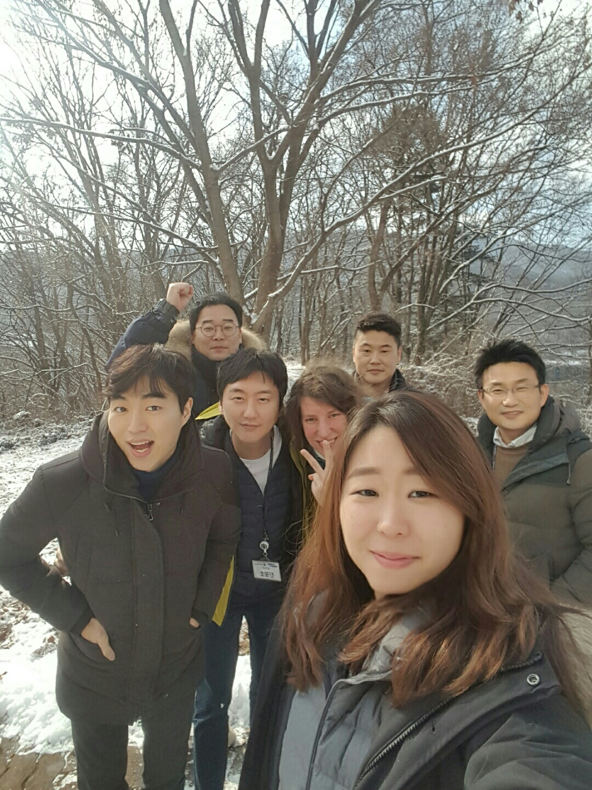
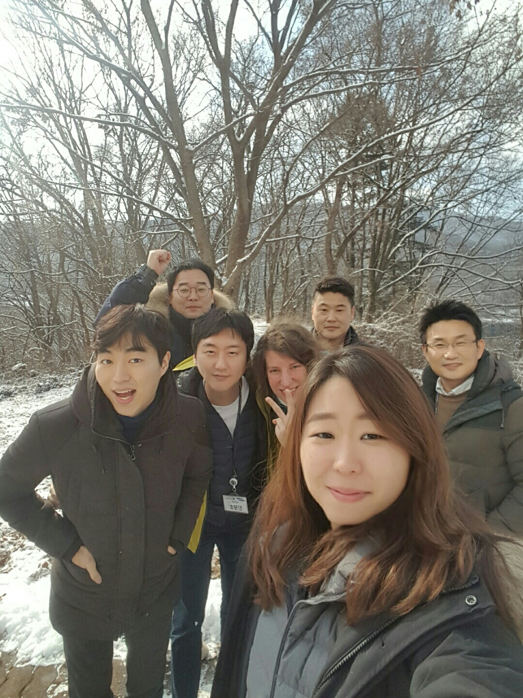

Tarina
Olen päättänyt siirtyä IT-alalle, koska olen erittäin kiinnostunut teknologiasta ja nopeasti kehittyvästä digitaalisesta maailmasta. Toivoisinkin tehdä luovaa työtä, jolla on mahdollisuus vaikuttaa. Unelmoin urasta, joka tarjoaa jatkuvasti uutta tietoa, jännittäviä haasteita ja erityisesti mahdollisuuden itseni kehittämiseen. Uskon, että alan asiantuntijana pääsisin osaksi tulevaisuutta ja voisin myös osallistua sen rakentamiseen. Viime vuonna aloitin web-kehityksen ja -suunnittelun opinnot ja olen erittäin kiinnostunut JavaScript- ja Python-koodikielistä.
Työkokemus
- IBM Global Financing - Account Specialist - 2020 kesäkuusta alkaen
- IBM Global Financing - Accounts Receivable Collector - 02.2018 - 06.2020.
- Veeva Systems - Master Data - 09.2017 - 02.2018.
- Hankuk University of Foreign Studies - Assistant Professor - 03.2014 - 08.2017.
Kokemus humanistisella alalla
Vuonna 2014, muutin Etälä-Koreaan, jossa olin töissä apulaisprofessorina Hankuk University of Foreign Studies nimisessä yliopistossa. Olen opettanut unkarin kieltä sekä käynnistänyt suomen kielen ja kulttuurin opettamiseen liittyvää projektia. Parhain saavutukseni on se, että minun opiskelijat ovat saaneet mahdollisuuden osallistua suomen kielen ja kirjallisuuden kesäkurssiin Turussa.
Apulaisprofessorina olen tehnyt myös tutkimusta. Olen erikoistunut nykykirjallisuuden analyysin ja olen keskittynyt pääosin unkarilaiseen traumakirjallisuuteen. Vuonna 2016, osallistuin kolleigoideni kanssa konferensiin, jossa puhuimme Hungarologian asemasta Aasiassa. Sektion teemat ja siihen liityvät artikkelit löytyvät Jyväskylän Yliopiston julkaisusarjasta.
 

Web-kehitys
Olen erittäin kiinnostunut web-kehityksestä ja suunnittelusta. Viime vuonna olen suorittanut web-kehityksen alkeiskurssin, jossa olen tutustunut HTML ja CSS kieliin. Lisäksi olen hyödyntänyt erittäin paljon Udemy academian verkkokurssesita. Alla on pieni video projektista, jota olen koodannut Udemy opettajan suunnitelmien mukaan.